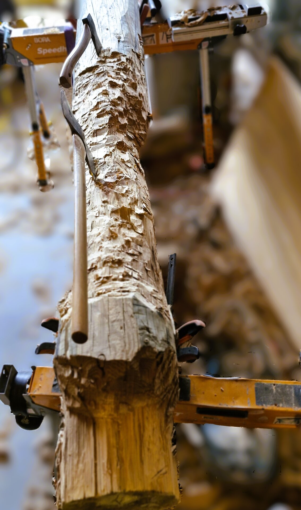
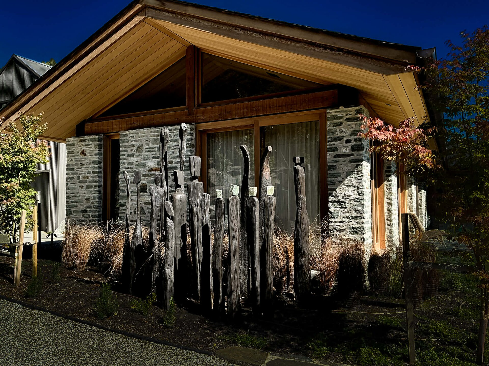
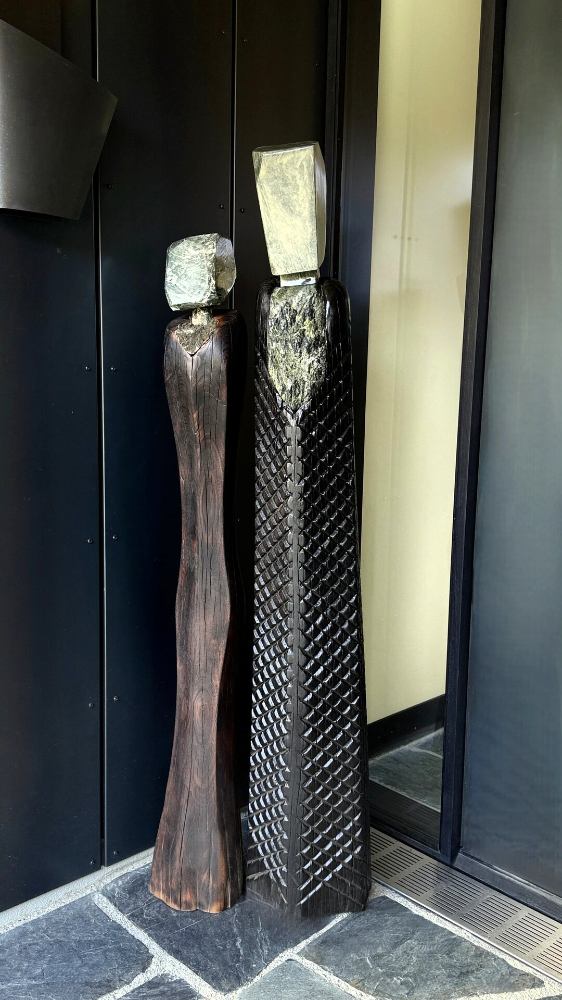

N° 02 · Legacy Commission
The Sixteen.
Sixteen ironbark figures, reclaimed from a roadside ditch near Queenstown. Three hundred years old. Now set back into the ground as guardians.
01 · Found
Sixteen rotten poles. Three hundred years old.
Reclaimed power poles, abandoned in a ditch near Queenstown. Western Australian ironbark, planted as saplings in the 1700s, that once held the copper veins carrying the first spark of light to the Wakatipu.
Invisible to everyone who passed them.
"What everyone else saw was firewood.
What he saw was three hundred years."

Hand-carving in progress — scale texture cut into the timber face, no two figures alike.
02 · Refined
Stripped to heartwood. Refined by fire.
Each pole stripped with axe and tomahawk. Scale texture hand-cut into every face — no two figures alike. Charred to bring out the grain and bind the timber against rot for generations to come.
Then crowned with hand-carved NZ serpentine and Aotea stone heads, matching the homestead walls.

03 · Installed
Shoulder to shoulder. Watching over.
Set into the ground in a quiet ring, the figures form a presence rather than a feature. Material returned to the land, not imposed on it.
Part of an ongoing private commission — a legacy in stone, timber and fire.
Material returned to the land,
not imposed on it.

The Guardians Within — entrance installation, Lake Hayes Residence.
04 · The Guardians Within
A welcome that holds.
The Sixteen stand outside, watching over the homestead. These stand at the entrance, welcoming the family back. Same ironbark, same stone, same hands.
The first presence the family meets on return.